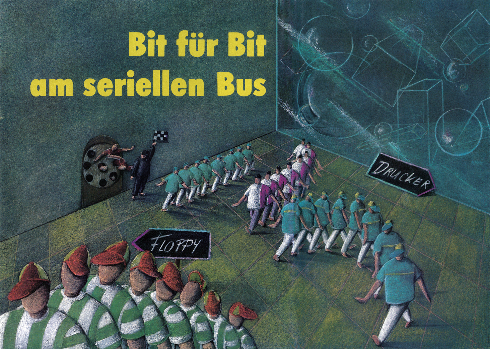

Bit für Bit am seriellen Bus
Über den seriellen Bus werden die wichtigsten Peripheriegeräte wie Floppy-Laufwerk oder Drucker an Ihren C 64 angeschlossen. Hier erfahren Sie, wie die Datenübertragung an diesem Bus funktioniert und welche Signale an den Kontakten anliegen.

enn Sie Ihrem Computer »LOAD "$" ,8« eingeben, so wird das Directory einer Diskette vom Floppy-Laufwerk in den Computer geladen. Das bedeutet, über den seriellen Bus müssen Daten übertragen werden. Äber wie funktioniert das eigentlich? Nun, wir wollen es Ihnen erklären.
Zunächst müssen Sie aber einige Begriffe kennenlernen, die zum Verständnisnotwendig sind. Wenn Sie wie im oben genannten Beispiel das Directory einer Diskette in den Computer laden, dann werden dabei vom Floppy-Laufwerk Daten gesendet und vom Computer empfangen. Das sendende Gerät nennt man »Talker«, während das Empfangsgerät als »Listener« bezeichnet wird.
Wir wollen aber zum besseren Verständnis die Begriffe »Sender« und »Empfänger« verwenden. In unserem Beispiel ist also das Floppy-Laufwerk ein Sender und der Computer ein Empfänger.
Anders ist es, wenn ein Programm auf Diskette gespeichert wird. In diesem Fall ist das Floppy-Laufwerk Empfänger und der Computer Sender. Wie Sie sehen, können Computer und Floppy beide Funktionen übernehmen. Bei einem Drucker ist das nicht so, er kann nur als Empfänger fungieren.
Drucker und Floppy-Laufwerk werden gleichzeitig an den seriellen Bus angeschlossen. Dennoch können vom Computer die Geräte einzeln angesprochen werden. Um dies zu ermöglichen, besitzen Drucker und Floppy-Laufwerk eine Geräteadresse. Man bezeichnet diese als »Primäradresse«.
High und Low
Üblicherweise ist die Primäradresse für das Floppy-Laufwerk 8 und für den Drucker 4. Um bestimmte Befehle an ein Gerätzuübermitteln, beispielsweise die Auswahl einer bestimmten Druckart beim Drucker, kann nach der Primäradresse noch eine Sekundäradresse übergeben werden.
Aber wie erfährt ein angeschlossenes Gerät eigentlich, daß es angesprochen ‚wird? Um dies verstehen zu können, müssen Ihnen einige Begriffe aus der Computer-Logik bekannt sein.
In der Computer-Logik werden nur zwei Zustände unterschieden. Man bezeichnet sie mit »High« und »Low«. Ist eine Leitung auf High, so sind daran zirka +5 Volt zu messen. Dieser Schaltzustand wird auch logisch »l« genannt. Bei Low, auch mit logisch »0« bezeichnet, muß die Spannung etwa 0 Volt betragen.
So, jetzt können wir uns wieder dem Problem zuwenden, wie ein einzelnes Gerät angesprochen wird.
Achtung, ich sende!
In der Tabelle 1 finden Sie alle Signale vom seriellen Bus. Wo die einzelnen Pins an der Buchse des Computers liegen, zeigt Bild 1. Im Ruhezustand sind alle Leitungen vom Bus auf High. Wird die Leitung ATN (Achtung) auf Low gesetzt, so unterbricht jedes Gerät seine Tätigkeit und wartet auf einen weiteren Befehl. Der Computer sendet jetzt die Primäradresse. Bestätigt das angesprochene Gerät nach einer bestimmten Zeit nicht den Empfang, dann geht der Computer davon aus, daß das angesprochene Gerät nicht angeschlossen ist und gibt eine Fehlermeldung aus. Wurde der Empfang bestätigt, übermittelt der Computer dem Gerät eventuell noch weitere Befehle (Sekundäradresse). Jetzt setzt der Computer die ATN-Leitung wieder auf High. Alle nicht angesprochenen Geräte setzten ihre unterbrochene Tätigkeit fort und kümmern sich nicht mehr um das weitere Geschehen auf dem Bus. Der Computer teilt dem angesprochenen Gerät mit, ob es als Sender oder Empfänger arbeiten soll. Nun werden über den Bus die Daten übertragen.
| Signal | Pin | Bedeutung | |
|---|---|---|---|
| SRQ | 1 | SERVICE REQUEST IN — Jedes am seriellen Bus angeschlossene Gerät kann diese Leitung auf Low ziehen, um auf sich aufmerksam zu machen. | |
| GND | 2 | GROUND — Masse | |
| ATN | 3 | ATTENTION IN/OUT | siehe Text |
| CLK | 4 | CLOCK IN/OUT | siehe Text |
| DATA | 5 | DATA IN/OUT | siehe Text |
| RES | 6 | RESET — Leitung, um die angeschlossenen Geräte in den Anfangszustand zu versetzen. | |
Nachdem das letzte Datum übermittelt wurde, zieht der Computer die ATN-Leitung wieder auf Low. Alle angeschlossenen Geräte reagieren wieder wie oben beschrieben. Der Computer sendet die Primäradresse und teilt dem angeschlossenen Gerät mit, daß die Datenübertragung beendet ist. Dabei wird die Initialisierung als Empfänger oder Sender wieder aufgehoben.
Soweit zum prinzipiellen Verlauf der Datenübertragung. Sie sollen aber auch erfahren, wie die Datenübertragung genau vor sich gehen.
Zunächst sollen Sie wieder einige Fachbegriffe kennenlernen. Die kleinste Einheit in der Datenübertragung ist ein Bit. In einem Bit kann lediglich zwischen Low und High unterschieden werden. Die nächst größere Einheitin der Datenübertragung ist ein Byte. Ein Byte beinhaltet acht Bit. Man unterscheidet eine parallele und eine serielle Datenübertragung. Bei der parallelen Datenübertragung werden alle acht Bit (ein Byte) gleichzeitig übertragen. Das heißt natürlich auch, daß dafür acht Leitungen notwendig sind. Anders ist es beim seriellen Bus. Hier werden die Daten bitweise übertragen, also ein Bit nach dem anderen. Die serielle Datenübertragung ist zwar langsamer als die parallele, aber dafür wird nur eine Datenleitung benötigt.
Übertragung
o .. ®
Bit für Bit
Am seriellen Bus Ihres C 64 erfolgt die Übertragung eines Bytes im Handshake-Betrieb. Das bedeutet, der Empfänger gibt eine Rückmeldung, ob das gerade übertragene Byte angekommen ist und das nächste gesendet werden kann. Schauen Sie sich den Ablauf der Übertragung eines Bytes einmalim Bild 2 an. Die ATN-Leitung ist während der normalen Datenübertragung auf High. Die entscheidenden Leitungen für die Übermittlung eines Bytes sind die DATA- und die CLOCK-Leitung. Zunächst macht der Sender kenntlich, daß er Daten übermitteln will, indem er die CLOCK-Leitung auf High setzt. Der Empfänger bestätigt seine Empfangsbereitschaft, indem er die DATA-Leitung auf High setzt. Nun beginnt die eigentliche Datenübertragung. Der Sender taktet mit der CLOCK-Leitung den Datentransfer. Mit jeder steigenden Flanke (Sprung von Low auf High) des CLOCK-Signals liest der Empfänger ein Bit ein. Nach der Übermittlung des achten Bits zieht der Empfänger die DATA-Leitung auf Low und kennzeichnet damit, daß er das Byte empfangen hat. Nun beginnt der ganze Vorgang für das nächste Byte von vorn.
Alle, die es noch genauer wissen wollen, finden in der Tabelle 2 die Zeitenangaben, also das Timing, für die im Bild 2 gekennzeichneten Schaltzeiten.
| Symbol | minimal | normal | maximal |
|---|---|---|---|
| TH | 0 | — | ∞ |
| TNE | — | 40 µs | 200 µs |
| TS | 20 µs | 70 µs | — |
| TV | 20 µs | 20 µs | — |
| TF | 0 | 20 µs | 1000 µs |
| TBB | — | — | — |
Dieser Beitrag sollte Ihnen ein grundlegendes Verständnis für den seriellen Bus vermitteln. Wenn Sie beispielsweise ein Drucker-Interface konstruieren wollen, sind solche Kenntnisse unbedingt notwendig.
Was man alles machen kann, wenn die Vorgänge am seriellen Bus professionell beherrscht werden, das zeigt Ihnen unser Listing des Monats in dieser Ausgabe. Durch dieses Programm wird die Datenübertragung zwischen Computer und Floppy bis auf das l4fache beschleunigt, ohne Hardware-Zusatz.
(kn)Literatur:
Commodore Sachbuch: »Alles über den C 64«, Markt & Technik Verlag 1986, ISBN 3-89090-379-7.